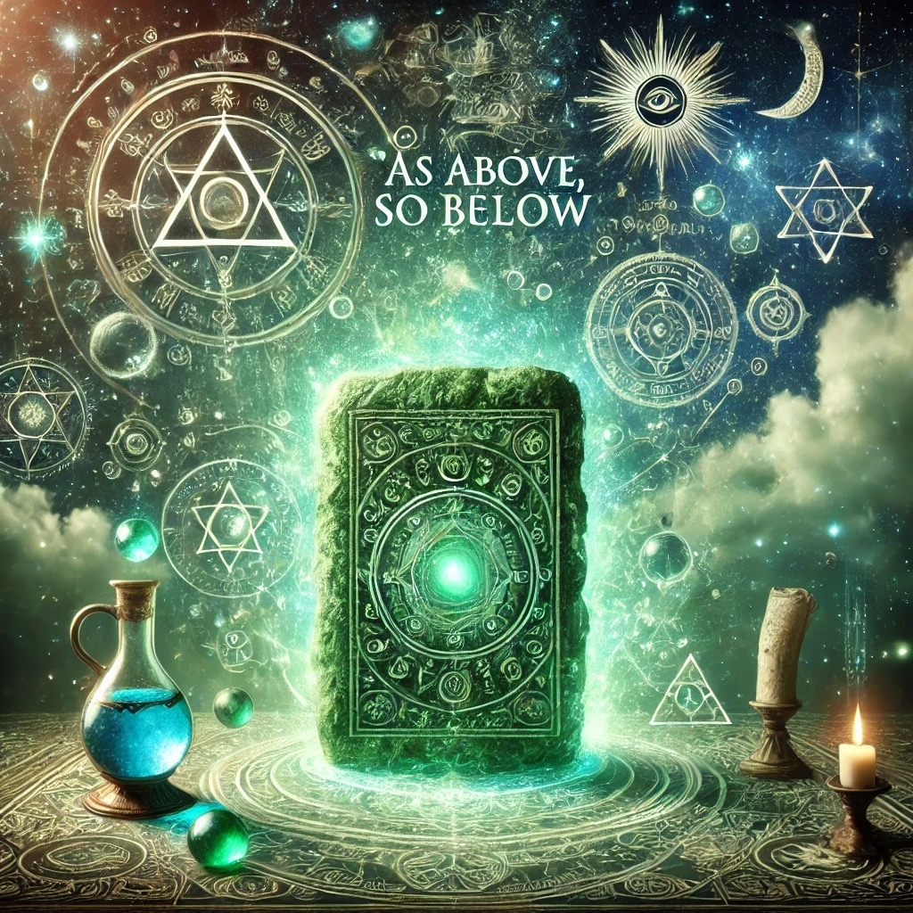
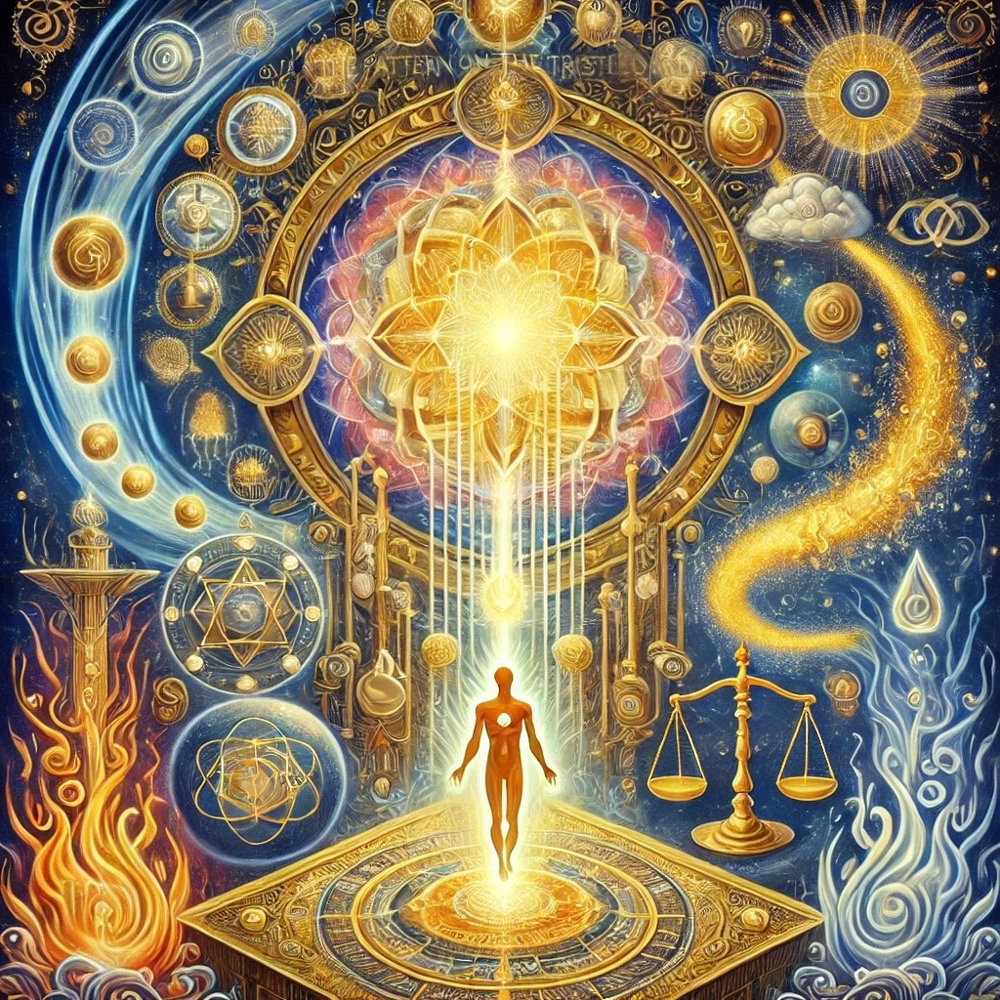

True, without falsehood, certain and most true, that which is above is as that which is below, and that which is below is as that which is above, for the performance of the miracles of the One Thing.
And as all things are from one, by the mediation of One, so all things have their birth from this One Thing by adaptation.
The Sun is its father, the Moon its mother, the wind carries it in its belly, its nurse is the earth.
This is the father of all perfection, or consummation of the whole world.
Its power is integrating, if it be turned into earth.
Thou shalt separate the earth from the fire, the subtle from the gross, suavely, and with great ingenuity.
It ascends from earth to heaven and descends again to earth, and receives the power of the superiors and of the inferiors.
So thou hast the glory of the whole world; therefore let all obscurity flee before thee.
This is the strong force of all forces, overcoming every subtle and penetrating every solid thing.
So the world was created.
Hence were all wonderful adaptations, of which this is the manner.
Therefore am I called Hermes Trimegistus, having the three parts of the philosophy of the whole world.
What I have to tell is completed, concerning the operation of the Sun.

The Pattern On The Trestleboard
0. All the power that ever was or will be is here now.
1. I am a center of expression for the primal Will-to-Good which eternally creates and sustains the universe.
2. Through me its unfailing Wisdom takes form in thought and word.
3. Filled with Understanding of its perfect law, I am guided, moment by moment, along the path of liberation.
4. From the exhaustless riches of its Limitless Substance, I draw all things needful, both spiritual and material.
5. I recognize the manifestation of the undeviating Justice in all the circumstances of my life.
6. In all things, great and small, I see the Beauty of the divine expression.
7. Living from that Will, supported by its unfailing Wisdom and Understanding, mine is the Victorious Life.
8. I look forward with confidence to the perfect realization of the Eternal Splendor of the Limitless Light.
9. In thought and word and deed, I rest my life, from day to day, upon the sure Foundation of Eternal Being.
10. The kingdom of spirit is embodied in my flesh.